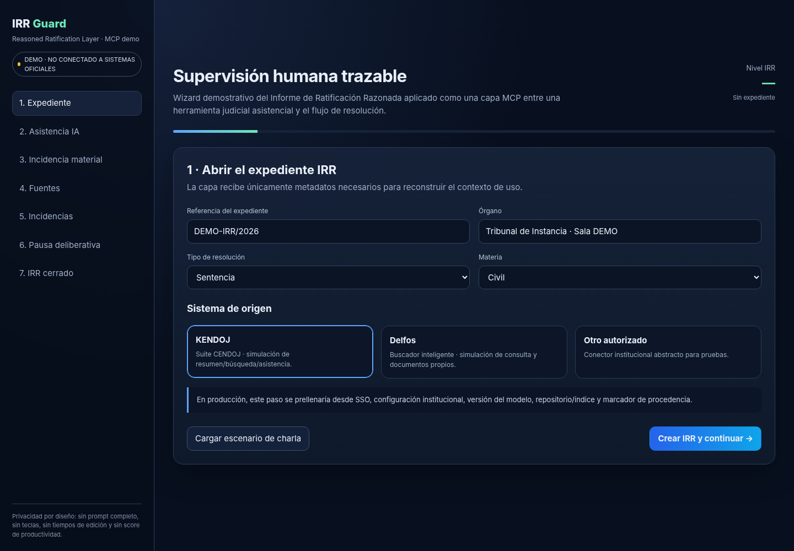

IRR Guard
Una capa MCP de supervisión humana trazable basada en el Informe de Ratificación Razonada (IRR), diseñada como prototipo para flujos de asistencia judicial tipo KENDOJ o Delfos.
Incidencia material
La intensidad de trazabilidad aumenta cuando el uso de IA incide materialmente en el razonamiento, no por el mero hecho de usar IA.
Verificación por capas
Distingue sintaxis, existencia, correspondencia, fidelidad de la proposición, vigencia, ratio/obiter y contraste con el expediente.
Ratificación humana
Permite cerrar el IRR solo cuando se han resuelto incidencias objetivas y existe una ratificación humana explícita.

Demo académica. No está conectada a sistemas judiciales oficiales y no debe utilizarse con expedientes o datos reales sin validación institucional de seguridad, privacidad, interoperabilidad y gobernanza.